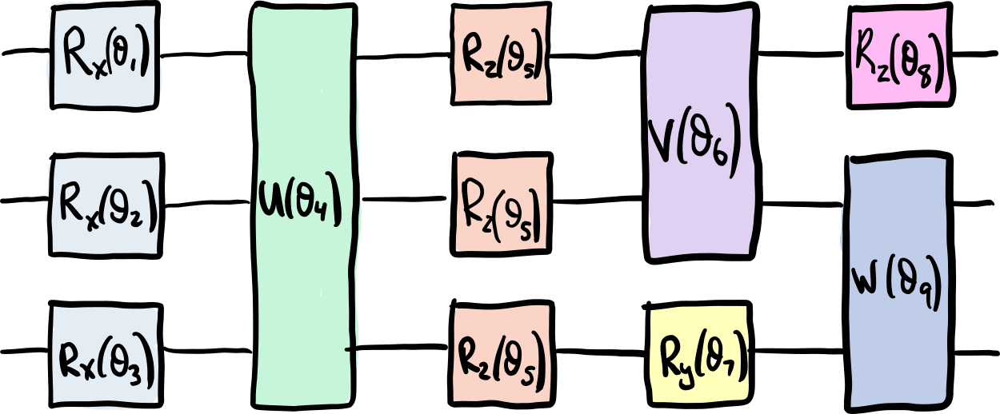
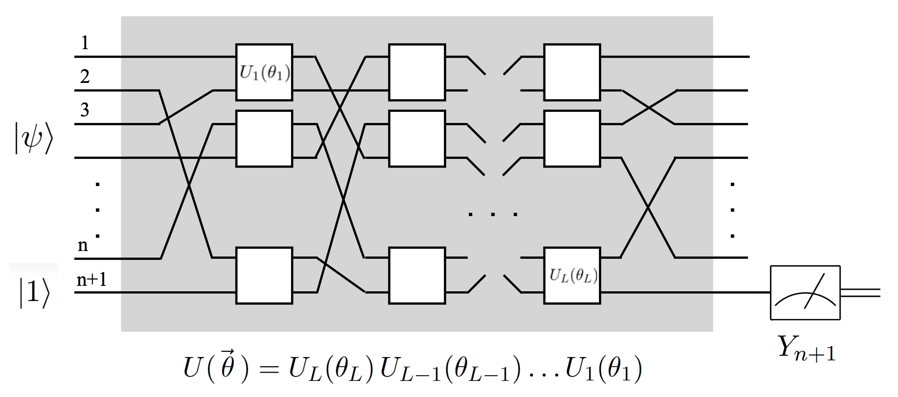

Quantum Neural Networks

Introduction
In finding more uses for quantum computers, we explore using them as trainable classifiers. Depending on their implementation, we can think of this application as a layer in a classical neural network. There are several resources on the study of specifically quantum neural networks. But first, we’ll go over the basic idea of how to create and train a neural network, then we will take a look at some resources and academic papers, and finally we will go over a simple implementation.
The Basics

A quantum neural network may be taken as a collection of well-chosen operations (we don’t know how to choose these operations yet) acting on an input of some sample data, and returning the classification of that data. Each operation parameter in the quantum neural network operation is tunable. Here, we use classical optimization to select the best parameters.
The end result is a quantum circuit with correctly tuned parameters such that it will return the correct classification for the input.
Resources (Important!)
The company Xanadu has developed a whole library for training quantum machine learning. For an easily digestible version, check out the Medium article.
One such implementation of a quantum neural network has been described by Edward Farhi and Hartmut Neven. Their article is a great read and can be found on arxiv.
In order to implement the quantum neural network described by Farhi and Neven, I started writing code based on the Jupyter Notebook from QuHackEd, the University of Edinburgh’s quantum hackathon. The original notebook may be found on github
Implementation
In this small example, we will be attempting to train a quantum neural network to classify single-bit inputs into binary categories. To show this as a classification table:
\begin{align}
z = \begin{cases}
0 \implies l(z) = -1\\
1 \implies l(z) = +1\\
\end{cases}
\end{align}
Where the l(z) is our classifying function.
While this might be a trivial classification, it will be complex enough for us to train. Furthermore, it will only need to use two qubits, so that training will be feasible even on a small personal computer.
Circuit Goal

A generalized version of the circuit can be seen above. $\psi$ is the sample input bits. In our case, we will only have one. The input $|1\rangle$ is an ancilla qubit. This qubit will interact with the sample input, then it will be measured at the end as the classification bit.
Loss Function
For our classical optimizer, we will need to define a loss function (the objective function to minimize). The goal is to penalize the circuit if the predicted label is different from the actual label.
\begin{align} L(z) = 1 - l(z) * l_{actual} \end{align}
Note that we can do this thanks to our chosen labeling scheme.
Starting the Code
Now we can actually start writing the code! We will start with preparing all inputs we need, as well as setting up the local simulator.
# Import the usual things
from pyquil import Program
from pyquil.api import get_qc, WavefunctionSimulator, local_qvm
from pyquil.gates import *
import numpy as np
import os, inspect, sys
import sys
sys.path.insert(0, 'tests/')
from tests import *
make_wf = WavefunctionSimulator()
Since we will be only working with 2 qubits, we’ll set up the 2-qubit qvm.
qc_name = '2q-qvm'
with local_qvm():
qc = get_qc(qc_name)
qubits = qc.qubits()
We’ll also prepare a general function to set up the input state. It’ll add on the ancilla |1\rangle as qubit 0.
# prepares the state equivalent to the bitstring
# [0,1,1] → Prepare the state |011,1⟩
def classifier_input_prep(bitstring, qubits):
n = len(bitstring)
input_circuit = Program()
for i in range(n):
if bitstring[i] == 1:
input_circuit += X(qubits[n-i])
input_circuit += X(qubits[0])
return input_circuit
Next we’ll prepare the Unitaries. To have more options, we’ll define a controlled-RX gate, as found in Rigetti’s documentation
from pyquil.parameters import Parameter, quil_sin, quil_cos
from pyquil.quilbase import DefGate
# Define the new gate from a matrix
theta = Parameter('theta')
crx = np.array([
[1, 0, 0, 0],
[0, 1, 0, 0],
[0, 0, quil_cos(theta / 2), -1j * quil_sin(theta / 2)],
[0, 0, -1j * quil_sin(theta / 2), quil_cos(theta / 2)]
])
gate_definition = DefGate('CRX', crx, [theta])
CRX = gate_definition.get_constructor()
Choosing Gates to Apply
Now the actual quantum neural network circuit needs to have operations to parametrize. As Farhi and Neven found, however, there is not really any guidance to what operations we could or should apply. Their article contains a lot of useful information in finding which operations to apply.
For our purposes, we will apply $R_y(\theta_2)$ to the first qubit, and then $CRX(\theta_1)$ to the second and first qubit.
def qnn_circuit_prep(input_circuit, params, qubits):
if not isinstance(input_circuit, Program):
raise TypeError('The input must be a Pyquil program')
qnn_circuit = input_circuit
qnn_circuit += gate_definition # We need to 'define' in the circuit the gate so it can be used in the circuit
qnn_circuit += RY(params[1], qubits[1])
qnn_circuit += CRX(params[0])( qubits[1], qubits[0]) # Add gates here
return qnn_circuit
Measuring Results
We’ll be measuring the ancilla qubit in the pauli-y basis:
\begin{align}
Y_{\text{anc}} = \left(\begin{array}{cc}
0 & -i \\
i & 0
\end{array}
\right)
\end{align}
We can do so by first applying $H$ and then $S^{\dagger}$
def measure_ancilla(qnn_circuit, qc, qubits, num_trials):
if not isinstance(qnn_circuit, Program):
raise TypeError('The input must be a Pyquil program')
qnn_circuit += H(qubits[0]) # Gates to rotate in correct pauli Y basis
qnn_circuit += S(qubits[0]).dagger()
ro = qnn_circuit.declare('ro', 'BIT', 1)
qnn_circuit += MEASURE(qubits[0], ro[0])
qnn_circuit.wrap_in_numshots_loop(num_trials)
executable = qc.compile(qnn_circuit)
measurement_results = qc.run(executable)
return measurement_results
Expectation Value
For the classical optimization, we need to have a function to find the average result of the circuit given some sample. Remember that $|0\rangle$ corresponds to $+1$ and $|1\rangle$ corresponds to $-1$
def compute_expectation(results, qubits, num_trials):
prob_zero = list(results).count([0])/num_trials
prob_one = list(results).count([1])/num_trials
# zero corresponds to value +1. one corresponds to the value -1
expectation_value = prob_zero - prob_one # Compute expectation value of Y observable
return expectation_value
Now we can write the loss function
def classifier_loss(params, samples, labels, qc, num_trials):
N = len(samples) # We want to run the optimiser over N samples to learn the appropriate classification rule.
loss_per_sample = np.zeros(N)
for sample in range(N):
input_circuit = classifier_input_prep(samples[sample], qubits) # Prepare the input state
qnn_circuit = qnn_circuit_prep(input_circuit, params, qubits) # Build the quantum neural network
results = measure_ancilla(qnn_circuit, qc, qubits, num_trials) # Measure the appropriate qubits
expectation_value = compute_expectation(results, qubits, num_trials) # Compute expectation value
loss_per_sample[sample] = 1 - labels[sample]*expectation_value # Define loss per sample.
# print(qnn_circuit)
# print("expecation value: \n", expectation_value)
# print("sample: \n", samples[sample])
# print("sample label \n", labels[sample])
# print("sample loss: \n", loss_per_sample[sample])
# print("--------------------------------")
loss = (1/N)*np.sum(loss_per_sample) # Compute average loss
print(loss) # We can keep this to print out the value of the loss during the optimisation
return loss
Generating Samples
We can manually generate samples and their corresponding labels very easily because of how simple our test set is defined to be.
import random
def generate_samples(N_samples, n_bits):
samples = [[random.randint(0,1) for bit in range(n_bits)] for sample in range(N_samples)]
labels = [] # The labels will be a list of +/- 1 values according to the ground truth above.
for sample in samples:
if sample[0] == 0:
labels.append(+1) # Fill label list with correct labels
else: labels.append(-1)
return samples, labels
Training the Circuit
Now we can train the circuit. We’ll be using scipy.optimize to choose the best parameter values for the circuit.
import scipy.optimize as opt
N_train_samples = 20 # We will use 20 training samples, i.e. 20 0's and 1's.
n_bits = 1 # Number of bits (length of samples)
params = np.random.rand(2) # Initialise the parameters randomly
num_trials = 50 # Number of times to measure the circuit on each run.
train_samples, labels = generate_samples(N_train_samples, n_bits) # Generate appropriate samples as a list
print('\nThe training samples are: ' , train_samples)
print('\nThe corresponding labels are: ', labels)
# Now run the optimiser, with the extra arguments the function requires.
result = opt.minimize(classifier_loss, params, args=(train_samples, labels, qc, num_trials), method='Powell')
print(result)
The training samples are: [[1], [1], [1], [1], [1], [0], [0], [0], [1], [0], [1], [0], [1], [1], [1], [1], [0], [0], [1], [1]]
The corresponding labels are: [-1, -1, -1, -1, -1, 1, 1, 1, -1, 1, -1, 1, -1, -1, -1, -1, 1, 1, -1, -1]
1.0099999999999998
0.9440000000000002
1.0100000000000002
0.9500000000000002
1.0259999999999998
1.048
0.9900000000000002
1.0099999999999998
0.9400000000000001
0.9740000000000002
0.9999999999999999
1.0
1.0220000000000002
1.002
0.96
0.9800000000000001
0.9920000000000002
1.0659999999999998
1.002
1.002
1.03
1.014
1.0
1.0380000000000003
0.9740000000000002
1.046
1.014
1.0280000000000002
1.032
0.9860000000000002
0.9500000000000001
0.96
0.9820000000000001
0.96
1.038
1.022
0.9659999999999999
1.048
1.0040000000000002
0.9420000000000001
1.012
0.956
0.9780000000000002
1.044
0.9580000000000001
1.016
0.9960000000000001
0.9760000000000002
1.086
1.012
0.992
0.968
0.9719999999999998
0.986
1.0
0.984
0.9620000000000002
direc: array([[1., 0.],
[0., 1.]])
fun: 0.9620000000000002
message: 'Optimization terminated successfully.'
nfev: 57
nit: 2
status: 0
success: True
x: array([2.92552347, 2.11167601])
Testing the Circuit
Now that the circuit has been trained, we can generate more samples and run the circuit to test the results. We’ll run tests on 10 new samples.
N_test_samples = 10 #Add code here
test_samples, labels = generate_samples(N_test_samples, 1) # Add code here
trained_params = result.x # Extract the trained parameters
print(trained_params)
[2.92552347 2.11167601]
loss = classifier_loss(trained_params, test_samples, labels, qc, num_trials) # Compute the loss on the test set. Make sure you use the trained parameters
print('The loss on the test set is:', loss)
1.0079999999999998
The loss on the test set is: 1.0079999999999998
Conclusions
The goal of the loss on the test set is to be as close to 0 as possible. This would mean that the prediction of the circuit would be absolutely accurate.
Unfortunately, the current result of the loss function is close to 1. Since the loss function ranges from 0 (total predictive accuracy) to 2 (always predicting the opposite of the true label), a value of 1 means that the circuit is predicting values no better than a random number generator. In order to improve results, we will need to look into using different gate operations to give better predictions.
)